WEBA 2005 à Dieppe

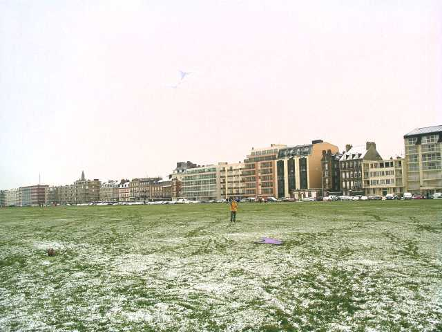
Le Weba, le Week-End du Bout de l'An, présente cette année 2 particularités : il n'est pas au bout de l'an, mais presque (il faut bien réveillonner, évidemment) et en plus ce n'est pas un Week-End ! En plus, il ne dure guère deux jours : on arrive le premier vers 10 h et on ne vole pas l'après-midi du deuxième pour faire la route dans les conditions hivernales. Cette année comme souvent, neige au programme : en arrivant, c'est seulement sur les hauteurs de Dieppe qu'on l'a trouvée ! Au retour, c'était à peu près fondu partout...

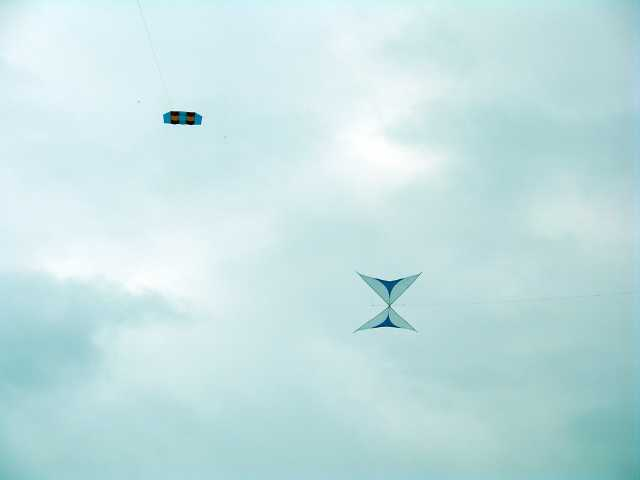
Comme d'hab, François est le premier sur le terrain bien qu'il ne soit quand même pas venu la veille... Le vent est léger, le Wasseige de 3 m est à son aise...

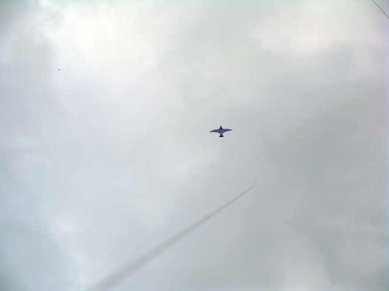
C'est l'occasion de sortir mon Oiseau Light que j'ai modifié récemment pour supprimer les pointes inesthétiques à l'avant des ailes. Il vole un peu moins bien, mais ça va encore pas mal !

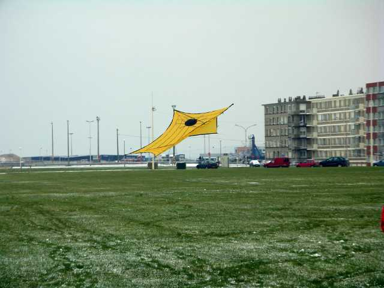
Dans le petit vent, toujours, un Vulandra jaune à toile d'araignée !

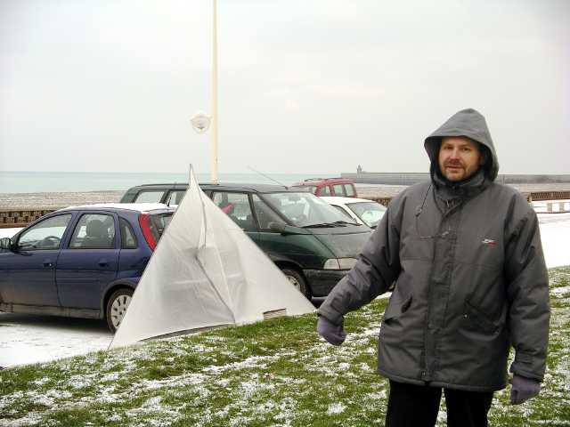
Même Dieppe s'est déplacé avec un delta très léger mais une protection pilote lourde !

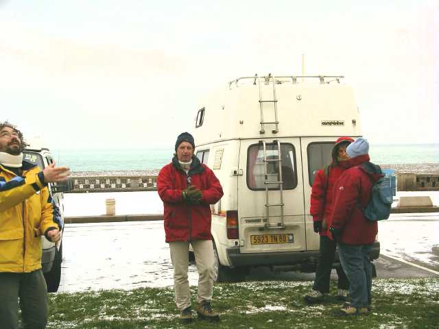
On monte les cerfs-volants doucement, on sent qu'on doit bien se protéger d'abord, voler après. Finalement, un vent plus fort aurait été dur à supporter... par les cervolistes !

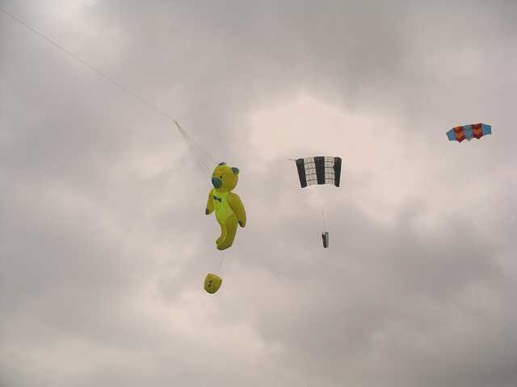
Patrick Guilbert ( y a plein de Patrick, aujourd'hui !) a sorti son multi-sled à poches et son nounours...

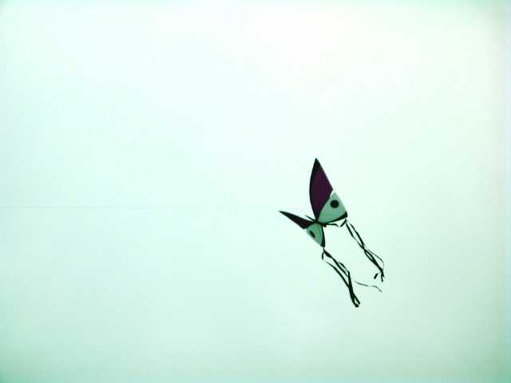
Et, pour les dames, un papillon, génial mais maintenant très classique...

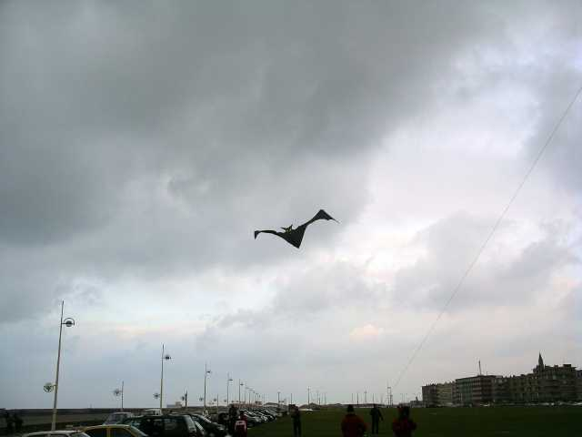
Et une chauve-souris menaçante dans ce ciel tourmenté...

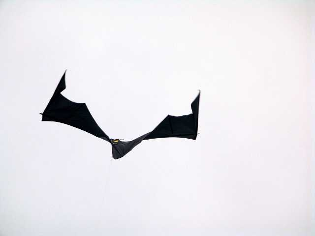
Ce que j'aime, c'est qu'elle bat des ailes pratiquement toute seule. Mon Condor fait un peu ça suivant les réglages, mais ça l'use prématurément. Il faudra que je travaille la question...

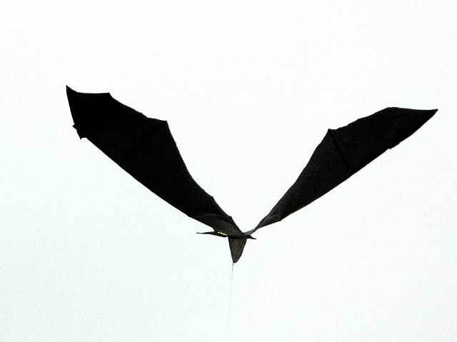
Avec des aspects toujours différents, sous certains angles, elle devient difficile à comprendre et un peu inquiétante !

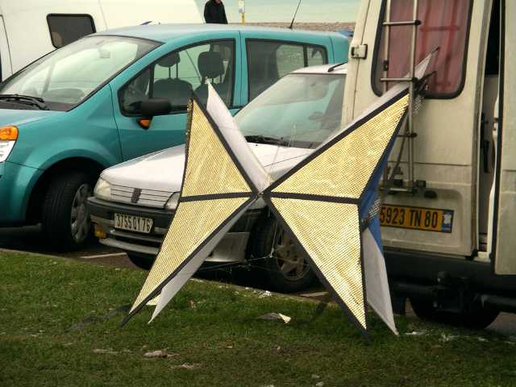
Didier a fabriqué un nouveau papillon, avec un tissu genre corsage de Noël ou Paco Rabanne... Mais c'est tout ventilé, et il est un peu lent à répondre...

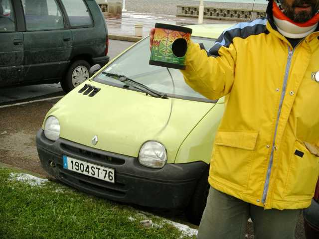
Il a reçu à Noël une boite à tonnerre : elle résonne longuement quand on la secoue, les vibrations du ressort métallique étant amplifiées par la membrane inférieure au centre de laquelle il est attaché.

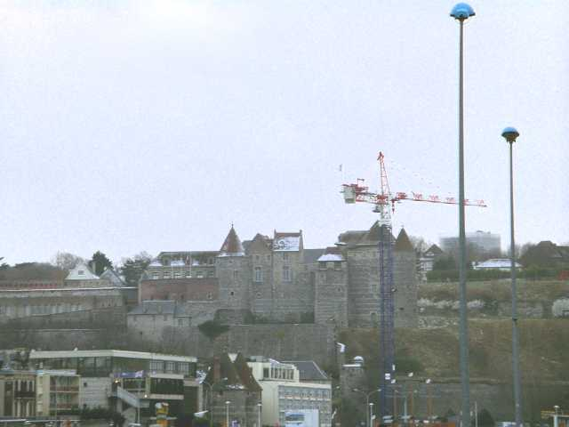
Le château aussi a pris une petite touche de neige. Les grues, devant, on m'a dit que c'était pour construire un parking souterrain... ! En tous cas, j'espère qu'ils ne vont pas gâcher la vue !

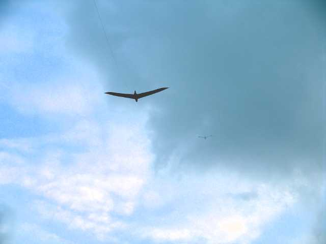
Patrick Mouchague a sorti son Albatros noir et rouge...

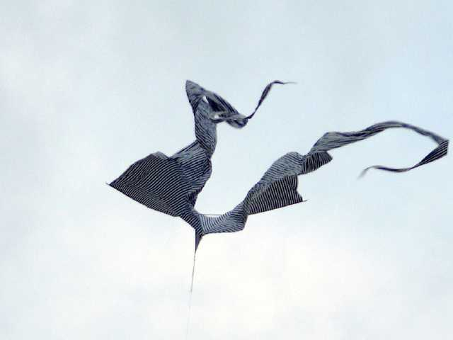
On a vu un beau pyrodelta aussi, en tissu rayé qui souligne les ondulations de la toile...

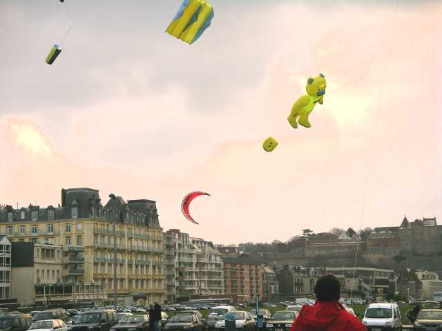
Même des tractionnistes ou des pilotables, qui ne savaient pas qu'il y avait un WEBA, sont venus voler avec nous...

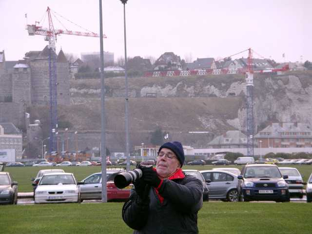
Patrick (Mouchague) essaie le nouvel objectif qu'il a apporté à Bruno Tondelier (toute la bande des Ventcourtois est là)...

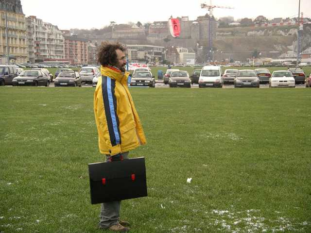
Didier joue les VRPs du cerf-volant, avec son baise-en-ville de jeune cadre... En fait c'est juste pour transporter ses cerfs-volants en papier, Ouf, j'ai eu peur !

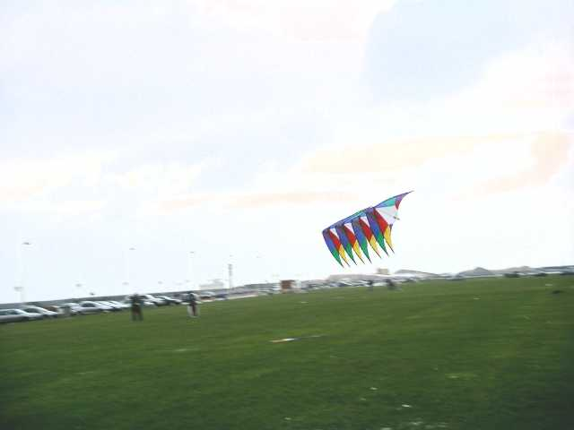
Quelqu'un a même sorti un train de pilotables spectaculaire qui apporte un peu de couleurs dans ce monde de grisaille ambiante !

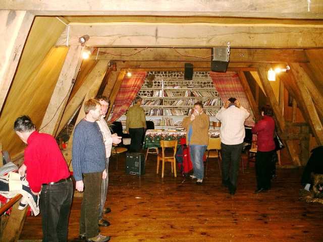
Mais le vent tombe et on commence à bien se geler. Alors on rejoint la salle bien chauffée de l'Asticot, siège d'une association écologique multicartes : la santé par les plantes, yoga, philosophie... On mouche le nez, on tombe l'anorak, ah, ça fait du bien de se réchauffer !

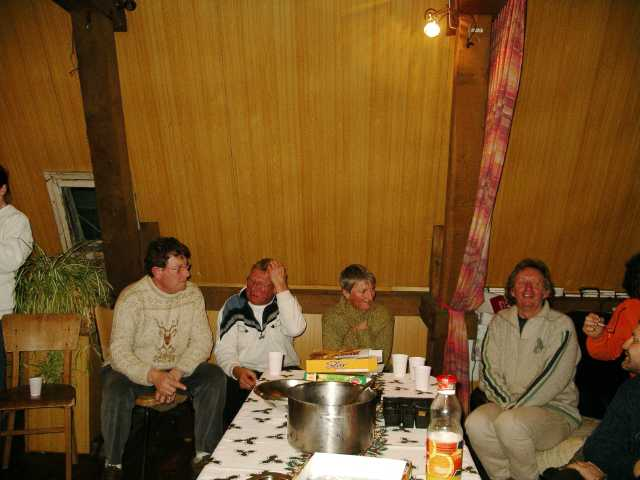
Mais il y a encore un Plus : le vin chaud achève de remonter les températures et élargit les sourires...

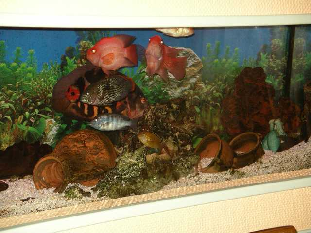
Et puis direction le restaurant où un bel aquarium nous accueille avec des poissons énormes (pour un aquarium) : bien 60 cm pour le plus gros...

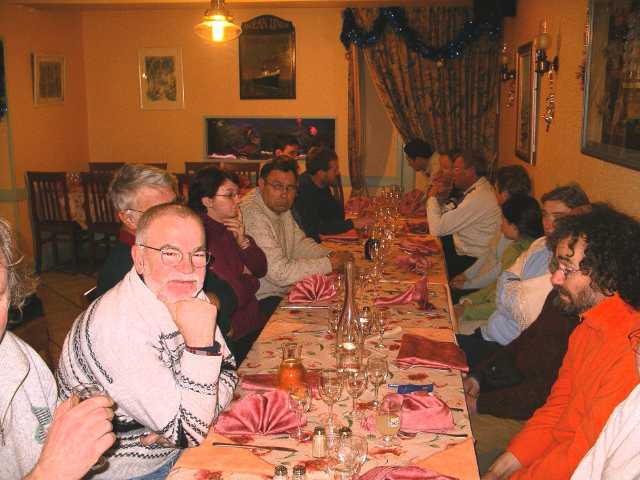
Une belle table, rien que pour nous, le restaurant est fermé et n'a ouvert que pour le WEBA... Il est tout près, à côté de la Maison du Combattant si vous relisez le reportage de Dieppe 2004.

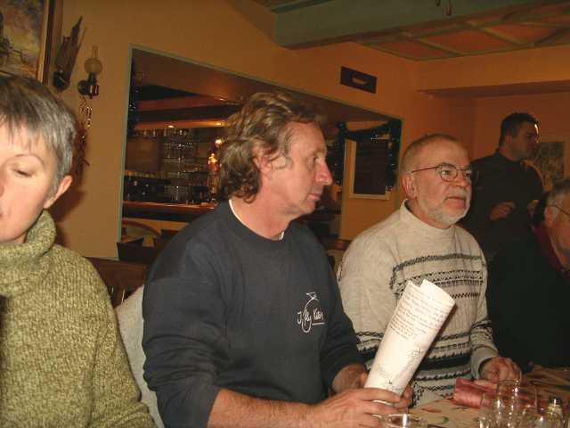
Patrick Guilbert a tout organisé de main de maître : des tableaux croisés rappellent les plats que chacun a choisi. Evidemment, tout le monde a oublié !

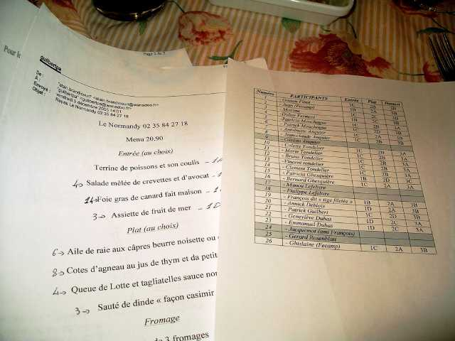
Et les feuilles de circuler, mais j'en connais qui oublieront encore et essaieront de manger le dessert des copains !

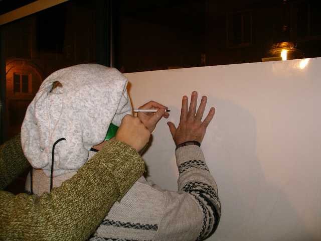
Après le repas, très bon soit dit en passant, jeux par couples (tirés au sort, sans distinction de sexe ou de nationalité, bien sûr !) : l'un dessine un cerf-volant, mais les yeux bandés. L'autre construit un moulinet avec les matériaux fournis...

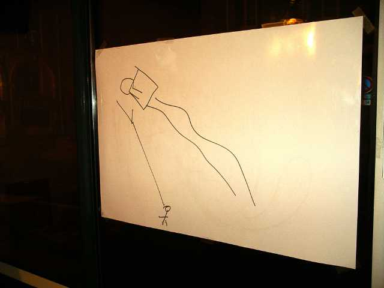
Evidemment, sans tricher, la déco du CV est à côté et la bride a raté son but...

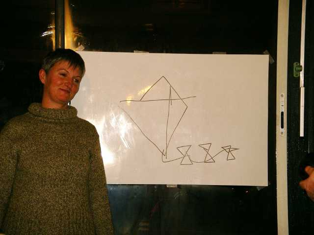
Annick ne s'est pas mal débrouillée, la queue surtout est bien réussie... Elle a pris des risques !

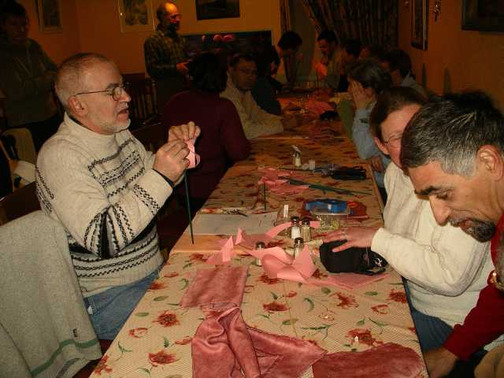
Pendant ce temps, l'autre partenaire doit construire un moulinet. Pas facile mais on a le plan. Mais il ne faut pas faire trop grand, le papier est un peu souple. Et puis le bois des baguettes est dur, et l'épingle molle, l'assemblage n'est pas évident !

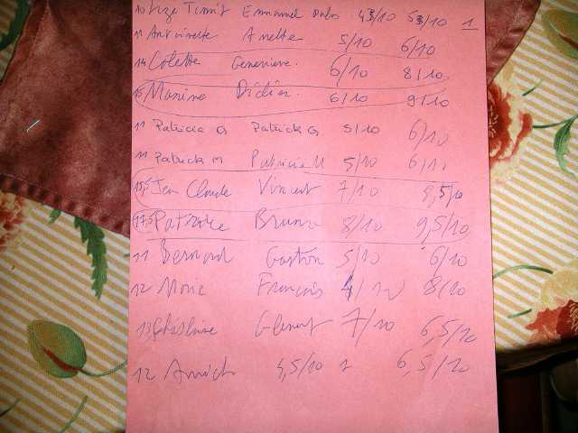
Finalement, le jury a noté tout le monde, on calcule les totaux (c'est dur à cette minute...) et les résultats sont affichés !

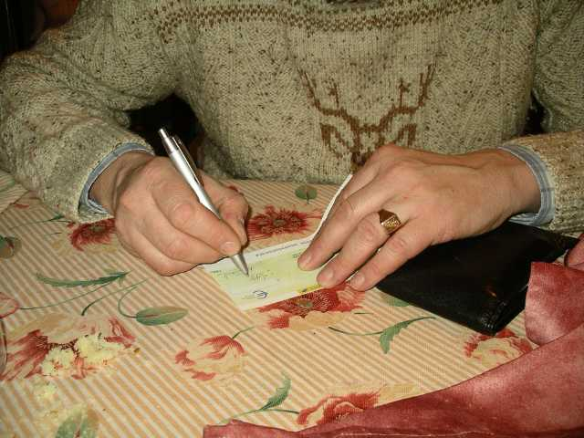
Bon, c'est pas tout, faut aller se coucher, mais d'abord un peu d'écriture !

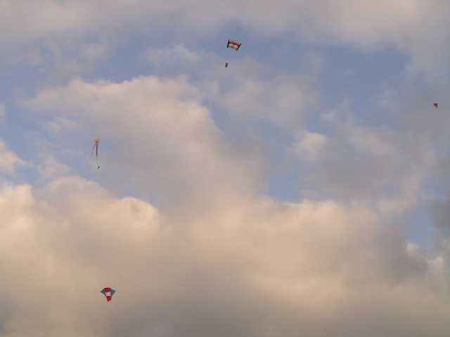
La nuit a été bonne, tout le monde a dormi, les uns à l'hôtel, d'autres en camping-car (chauffé), d'autres dans la salle de l'Asticot. Au matin, c'est reparti, conditions à peu près bonnes, un vent plus soutenu.

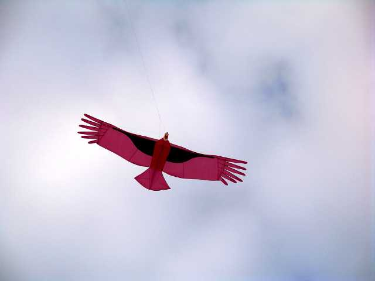
Avec ce vent, j'ai pu mettre en l'air mon Condor. Il y a encore des plumes qui rebiquent vers le bas et déséquilibrent le bestiau, il faudra remédier à ça...

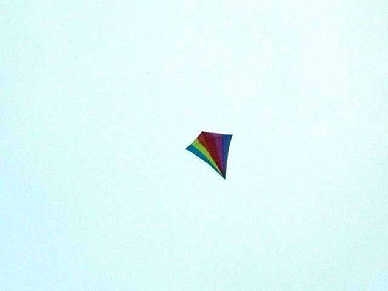
François fait voler son Eddy souple tout là-haut là-haut. Il est cloué dans le ciel, sans balancer ni se tortiller comme beaucoup de Eddies. Bonne construction, sans doute un effet aussi du tissu un peu poreux qui amortit les balancements...

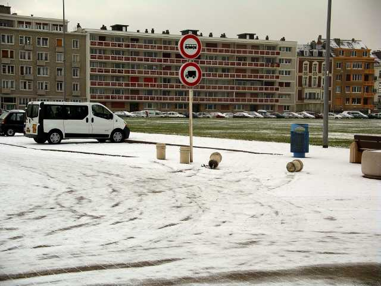
Il reste de la neige par terre et elle a été tassée par les voitures hier. Les deux bornes couchées l'ont été non pas par une voiture, mais en 10 mn par deux voitures qui voulaient tourner, mais qui n'ont pas tourné assez ! La première est montée dessus et y a laissé son pare-choc en reculant...

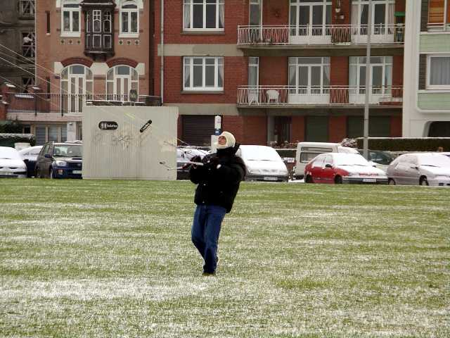
Bernard a sorti sa voile pour se réchauffer, et s'est bien protégé !

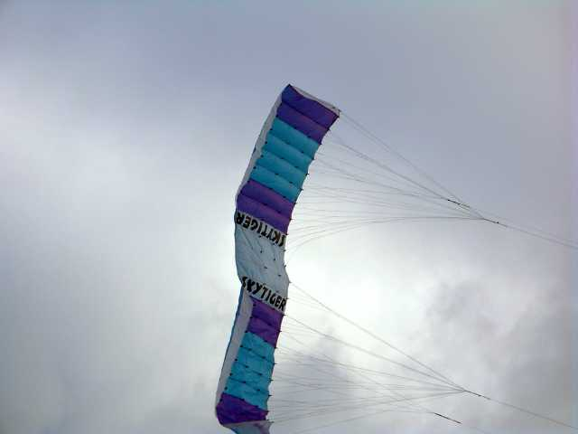
La SkyTiger marche bien !

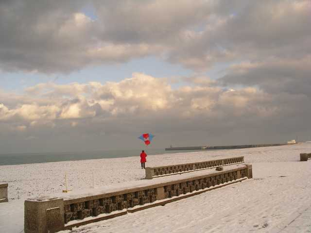
François fait encore voler son Conyne qu'il a finalement réussi à faire voler droit en retendant la toile. Il le monte bien haut, courageusement.

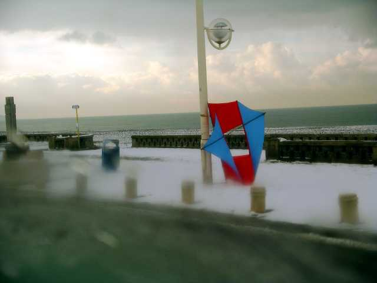
Malheureusement le vent tombe pendant l'apéro et le Conyne finira à la mer. Bon, là, il est mis à sécher mais, à mon avis, il vaudra mieux lui remettre un coup de séchage en rentrant à la maison...

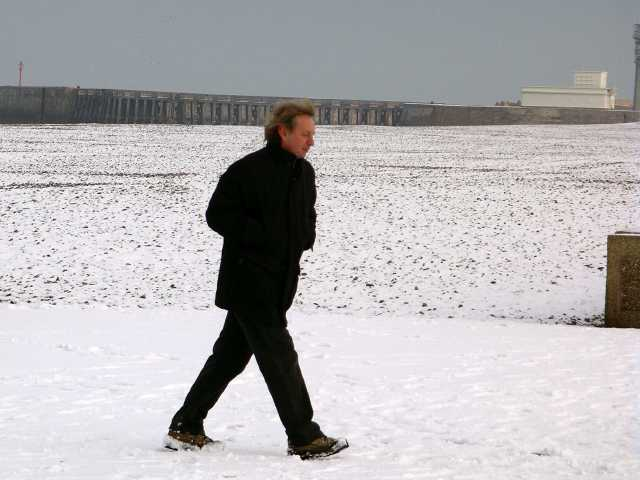
On ne reste pas très nombreux et on déjeune dans le camping-car de Bernard et Patricia, chacun amenant sa ration. On ne volera pas l'après-midi pour rentrer à la maison avant la nuit. Le Grand Organisateur quitte le théâtre, mission accomplie. Merci Patrick et Bonne Année!